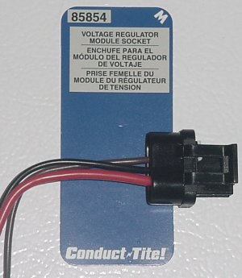
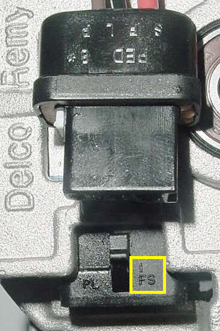
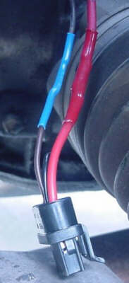
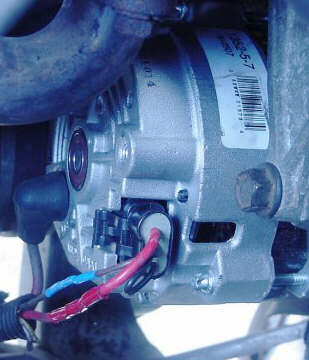

Now that everything is out of the way and you are left with the single largest space in the engine compartment take a picture as evidence...it's about to disappear again! Turn your attention to the wiring. Forget the adapter idea. Many are not wired properly anyway. A color-blind person can splice in a new end and avoid having two connections where only one is needed. Really, just notice the weight of the wires. The red wire is twice the size of the brown wire. This is a Version F Alternator (see Ogre's Cave/electrical/Charge & Start/CS Alternator for explanation) conversion...you only need those two wires. Here is what you need. Motormite® Conduct Tite™ #85854.

The connector comes with three wires: red, black, and brown. They are in the S, L, and F positions respectively (the P wire is not present and the hole in the backing plug is not visible from the outside). Leave the black one alone. You can trim it short and stick it in the fourth hole on the end (it isn't complete unless you disassemble the plug and poke a small hole, or you can remove the black wire completely by removing the white clip and releasing the locking pins in each connector hole with a jeweler's screwdriver or a paperclip and seal the hole with silicone). Notice the wires match without any alteration of the plug (look closely and you can see the markings mirroring each other on each part.

Ogre Note: Notice the area I boxed in yellow above. The F terminal is also marked I. This is one of the reasons it is hard to tell an F regulator from an I unit. All conversions should be wired as F units unless you are 100% certain of which regulator you have.
Prep the wires, as in clean them well, for a good seal with your heat shrink tubing. Also make sure you don't cut the connector or your new one too short (about 2" hanging free on the new one and cutting 1" above the old connector worked well for me). Solder prep both end and then solder together. Using the heat gun or a lighter (Danger, Will Robinson, Danger...use a heat gun Phil...*snicker*...JK) to shrink it up good and tight. Like so...

Install the new CS Alternator by reversing the disassembly steps. Feed new one in, replace mounting bracket, install alternator in bracket, replace belt, adjust and tighten, renew all connections, replace brake line bolts CAREFULLY and inspect, replace wheel, double check everything, lower car to ground, renew battery connections and ground, and you should have this...

This is an image looking down obviously. Some of you are now saying, "hey the connector on the voltage regulator is on top...". Roger that! That's why you want to be careful in splicing in a new connector should you do the same. Leave enough length to avoid stressing the harness leading to the transaxle which is bundled with these wires. And as the French, whom we are now even MORE fond of kicking while they are down...surrending, say...Viola! You're done!
Proceed to the final page for comparison pictures, measurements, and such.